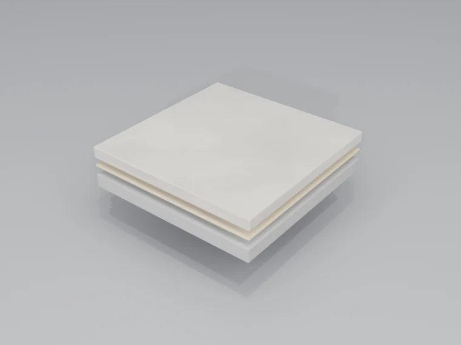

הפיכת בטון קיים לרצפה גמורה באמצעות ליטוש, מירוק וצביעה. מקסימום קיימות עם מינימום חומר נכנס — הבחירה האקולוגית האולטימטיבית לריצוף.
היכן בטון מלוטש עובד
בטון מלוטש הופך לוחות בטון רגילים לרצפות יפות ועמידות. הוא אידיאלי לחללים שבהם קיימות, תחזוקה נמוכה ואסתטיקה מודרנית הם בעדיפות.
קמעונאות ואולמות תצוגה
אסתטיקה חלקה ומודרנית. החזרי אור גבוהים מפחיתים עלויות תאורה. תחזוקה נמוכה.
מחסנים והפצה
בטון מוקשה עמיד בתנועת מלגזה. פני שטח נטולי אבק משפרים את איכות האוויר.
בנייני משרדים
שימוש בלוח הבטון הקיים במקום שבו הוא מתאים. גימור אגרגט חשוף או גימור קרם.
מגורים
אסתטיקת שיק תעשייתי. מתאים לחימום תת-רצפתי. אפשרות ריצוף דלת-אלרגנים.
הערכת תשתית
בטון מלוטש הופך לוחות בטון קיימים לרצפה. המראה הסופי תלוי במידה רבה באיכות ובמצב התשתית. הצוות שלנו מבצע הערכות יסודיות לפני כל פרויקט.
- איכות הבטון — בטון בחוזק גבוה יותר (25+ MPa) מתלטש טוב יותר. סוג האגרגט משפיע על המראה
- ציפויים קיימים — חומרי איטום, צבעים ודבקים ישנים חייבים להיות מוסרים. עשוי לדרוש ליטוש אגרסיבי
- תיקון סדקים — סדקים ממולאים באפוקסי או בפוליאוריאה. יישארו גלויים כמאפיין עיצובי
- שטיחות — הליטוש מסיר נקודות גבוהות. תיקון שטיחות משמעותי דורש שכבת יישור
- לחות — מוקשים מסייעים עם לחות מתונה. לחות תשתית קשה (MVT) עשויה לדרוש פתרון מיגון
תהליך הליטוש
בטון מלוטש מושג באמצעות תהליך מכאני שיטתי המקשה ומעדן את פני השטח.

ליטוש
ליטוש יהלום מדורג מגס (30-50 grit) לבינוני (100-200 grit). מסיר את שכבת פני השטח, חושף אגרגט במידת הצורך, ויוצר מישור שטוח.
הקשיה
מוקשה ליתיום סיליקט חודר ומגיב עם הבטון, ומקשה את פני השטח. יוצר מטריצה נטולת-אבק ועמידה בשחיקה.
מירוק
מירוק יהלום עדין (400-3000 grit) מפתח את הברק. גרעיניות גבוהה יותר = ברק גבוה יותר. שכבת מגן אופציונלית לעמידות בכתמים.
אפשרויות גימור
אנו מציעים מספר רמות גימור להתאמה לדרישות האסתטיות והפונקציונליות שלכם:
ליטוש קרם
ליטוש מינימלי — מירוק שכבת המשחה העליונה. צבע אחיד, ללא חשיפת אגרגט.
מלח ופלפל
חשיפת אגרגט קלה. תערובת של אגרגט דק ומשחת צמנט נראית לעין.
אגרגט מלא
ליטוש עמוק חושף אגרגט גס. שבבי אבן גלויים לכל אורך פני השטח.
צבוע
צבע חומצי או דאי מוסיף גוון. צבעים ריאקטיביים יוצרים אפקטים מגוונים וייחודיים.
יתרונות מרכזיים
- פחות חומר נכנס — שימוש בלוח הבטון הקיים במקום שבו הוא מתאים, עם מוקשה/שכבות מגן הנבחרות לפי דרישות האתר.
- תחזוקה נמוכה — פני שטח מוקשים עמידים בכתמים ובאבק. פרוטוקול ניקוי פשוט.
- חסכוני — ללא חומרי שכבת יישור. עלות מחזור חיים נמוכה מרוב מערכות הריצוף.
- מחזיר אור — ליטוש בברק גבוה מחזיר את אור הסביבה ומפחית את עלויות אנרגיית התאורה.
- עמיד — אורך חיי שירות של 25+ שנים. ניתן ללטש מחדש אם נשרט או נשחק.
- ללא שינוי גובה רצפה — התהליך מסיר חומר במקום להוסיף. ללא בעיות דלת או מעבר.
פרוטוקול תחזוקה
בטון מלוטש ומוקשה קל במיוחד לתחזוקה. פני השטח הקשים והצפופים עמידים בשחיקה ובכתמים.
יומי
ניגוב אבק במגב מיקרופייבר נקי. מכונת שטיפה אוטומטית לשטחים גדולים.
שבועי
ניגוב לח בחומר ניקוי בעל pH ניטרלי. ללא צורך בשעווה או ליטוש.
חודשי
הברקה במבריק במהירות גבוהה במידת הצורך לשחזור הברק.
לפי הצורך
הקשיה וליטוש מחדש של אזורים שחוקים. בדרך כלל כל 5-10 שנים בתנועה גבוהה.
מתעניינים בבטון מלוטש?
הניחו לנו להעריך את לוח הבטון הקיים שלכם ולהמליץ על אפשרות הגימור הטובה ביותר לחלל שלכם.
קבלת הצעת מחיר חינם